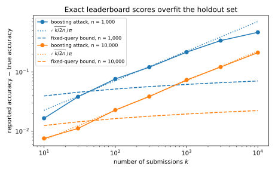
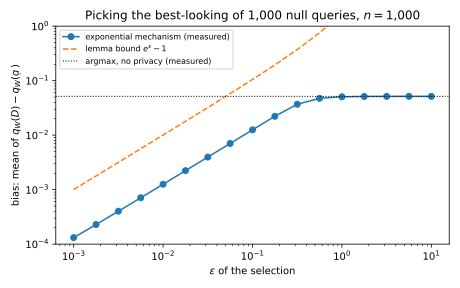
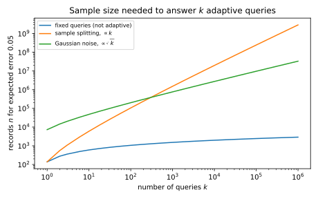
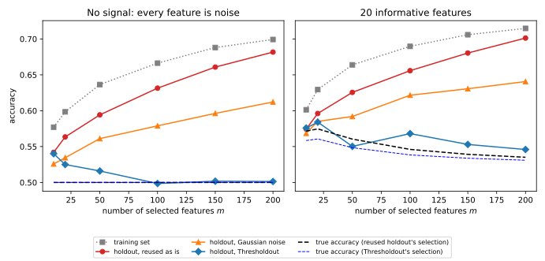

48 Adaptive data analysis
Every chapter so far has used differential privacy (DP) to protect the people in a dataset. This chapter uses it for a different purpose: to keep a data analysis honest. Machine learning reuses its evaluation data all the time. You tune hyperparameters on a validation set, look at the scores, and try new settings, and competition teams adjust to every leaderboard score. In each case the next question asked of the data depends on the answers to the previous ones. How many such questions can one holdout set answer before its answers stop telling you anything about new data?
The idea that organizes the answer is that a question chosen from answers that reveal little about any one record cannot be overfitted to the holdout set. Overfitting a holdout set means choosing questions that fit its particular records, and to do that the analyst must learn something about those records from the earlier answers. A DP mechanism limits what any sequence of answers reveals about a single record, and that limit survives whatever the analyst computes from the answers. So the proof of Algorithmic stability and generalization, which replaces one record at a time by a fresh one, still works with privacy in place of stability.
The running example is a search over 1,000 hyperparameter configurations on a validation set of 10,000 records, each configuration chosen from the scores of the earlier ones. The error of a score is how far it lies from the model’s accuracy on new data. If the scores were questions fixed in advance, their largest error would be at most 0.0195 on average. Chosen adaptively, they can be much worse: an analyst who attacks the set can make a model that only guesses at random score 0.0712 above its true accuracy. Of the guarantees that hold for any analyst, splitting the set so that each record answers one question bounds the largest error only by 0.6165, and Gaussian noise on each answer by 0.4095. When the analyst also has a training set, the reusable holdout does better in practice, because it adds noise only when the two sets disagree. The chapter’s symbols are collected in Table 48.1.
| Symbol | Meaning |
|---|---|
| \(D = (x_1, \dots, x_n)\); \(\mathcal D\) | the sample of \(n\) records; the population it is drawn from |
| \(f\); \(f(D)\); \(f(\mathcal D)\) | a statistical query; its empirical value; its population value |
| \(k\); \(f_j\), \(a_j\) | the number of queries; the \(j\)-th query and its answer |
| \(\alpha\); \(\beta\) | the accuracy target; the failure probability |
| \(D \sim D'\); \(D^{(i)}\) | samples that differ in one record; \(D\) with \(x_i\) replaced by a fresh draw \(x_i'\) |
| \(W\); \(f_W\) | an algorithm that reads the sample and outputs a query; that query |
| \(\sigma\); \(\rho\) | the standard deviation of Gaussian noise; the parameter of zero-concentrated DP |
| \(D_t\), \(D_h\); \(\tau\), \(b\), \(B\) | Thresholdout’s training and holdout sets; its threshold, Laplace noise scale and budget of detections |
| \(\Delta\) | the sensitivity, the most that replacing one record moves a query |
48.1 Reusing a holdout set overfits
A holdout set gives an unbiased verdict on a model that was fixed before the holdout set was drawn. The trouble starts on the second question, once the analyst has seen an answer and lets it shape the next one. This section makes the setting precise and shows how quickly exact answers go wrong.
The questions are averages over records, such as an accuracy, so they are the questions of Part 1’s stability chapter (Definition 7.4), here called queries.
Definition 48.1 (Statistical queries and adaptive analysis) The dataset \(D = (x_1, \dots, x_n)\) is a sample of \(n\) records drawn independently from a distribution \(\mathcal D\), the population. Each record holds features and label together. A statistical query is a function \(f\) from one record to \([0, 1]\), such as “does this classifier get this record right?”. Its empirical value and its population value are \[f(D) = \frac1n\sum_{i=1}^nf(x_i), \qquad f(\mathcal D) = \mathbb E_{x \sim \mathcal D}\big[f(x)\big]. \tag{48.1}\] An analyst asks \(k\) queries \(f_1, \dots, f_k\) one at a time, and a mechanism \(M\) answers query \(f_j\) with a number \(a_j\). The analysis is adaptive when each query may depend on the earlier answers. The answers are accurate to a target \(\alpha\) when the largest error \(\max_j|a_j - f_j(\mathcal D)|\) is at most \(\alpha\), either on average or with probability at least \(1 - \beta\) for a small failure probability \(\beta\).
When the queries are all fixed before the sample is drawn, exact empirical answers are accurate, and the number of queries enters only through its logarithm. Theorem 7.5 proves that the expected largest error then obeys \[\mathbb E\Big[\max_{j\le k}\big|f_j(D) - f_j(\mathcal D)\big|\Big] \le \sqrt{\frac{\ln(2k)}{2n}}. \tag{48.2}\] A version with high probability follows from Hoeffding’s inequality (Theorem 2.5), which bounds the chance that one error exceeds \(\alpha\) by \(2e^{-2n\alpha^2}\), and the union bound over the \(k\) queries (Lemma 2.3). So all \(k\) errors stay below \(\alpha\) with probability at least \(1 - \beta\) once \[n \ge \frac{\ln(2k/\beta)}{2\alpha^2}. \tag{48.3}\] At \(\alpha = \beta = 0.05\), ten queries need 1,199 records. A thousand queries need 2,120, and a million need only 3,501.
That argument needs each query to be fixed while the records are drawn, so that its values on the records are independent draws with mean \(f_j(\mathcal D)\). One query built from earlier answers is enough to break it.
Proposition 48.1 (The point-query attack) Let the records be uniform on \(N\) values, labelled \(1, \dots, N\), and let a mechanism answer every query with its exact empirical value. An analyst asks the \(N\) point queries \(f_v(x) = \mathbf 1[x = v]\), which are fixed in advance. Then it asks one query chosen from their answers: “is this record’s value one of those that occur in the sample?”. With these \(k = N + 1\) queries, the largest error is \[\max_j\big|a_j - f_j(\mathcal D)\big| \ge 1 - \frac nN = 1 - \frac{n}{k - 1}. \tag{48.4}\]
Proof.
- The last query can be built. The answer to \(f_v\) is positive exactly when the value \(v\) occurs in the sample, so the point queries’ answers name the set of values that occur.
- Its empirical value. Every record’s value occurs in the sample by definition, so the last query is 1 on every record, and its answer is 1.
- Its population value. The last query is 1 exactly on the distinct values of the sample, of which there are at most \(n\). A fresh record takes each value with probability \(1/N\), so the population value is at most \(n/N\).
- The error. The last answer exceeds its population value by at least \(1 - n/N\), which is Equation 48.4.
The bound holds for every sample, and it stays above \(\frac12\) until \(n \ge (k - 1)/2\). So with exact answers \(n\) must grow linearly in \(k\), against \(\ln k\) for fixed queries. Each point query is harmless, but together they reveal the sample, and a later query exploits it.
Example 48.1 With \(n = 1{,}000\) records on \(N = 2{,}000\) values, the 2,000 point queries are all within 0.0035 of their population values in one run of the chapter’s script. The last query has empirical value 1 and population value 0.3905, against an expected \(1 - (1 - 1/2{,}000)^{1{,}000} = 0.3935\). So its error is about 0.61, while Equation 48.2 would bound the average largest error of 2,001 fixed queries by 0.0644. With \(N = 10{,}000\) values the error is about 0.90.
Real analysts leak more slowly than this attack, but they leak. In Freedman’s paradox (Freedman 1983), which Part 1 runs in Example 7.9, features screened and then tested on the same sample look predictive even when all are noise. The leaderboard version is an attack of Blum & Hardt (2015).
Definition 48.2 (The boosting attack) The holdout labels are \(n\) fair coins, independent of everything else, so no submission can beat an accuracy of \(\frac12\) on new data. The attacker submits \(k\) random labellings of the holdout records and reads each one’s exact accuracy. It keeps the labellings that scored above \(\frac12\), and submits their majority vote on each record.
Each kept labelling agrees with the holdout labels slightly more often than chance, and the vote adds these small agreements up. A normal approximation predicts that the vote’s reported accuracy exceeds its true accuracy of \(\frac12\) by about \[\frac{\sqrt{k/(2n)}}{\pi}. \tag{48.5}\] So the overfitting grows like \(\sqrt{k/n}\), while the bound Equation 48.2 for fixed queries grows only like \(\sqrt{\ln k/n}\).
Example 48.2 Table 48.2 runs the attack, averaged over 20 runs. In the running example’s regime, 1,000 submissions to a holdout set of 10,000 records, the final submission reports 0.5712 for a coin flip. Its overfitting of 0.0712 is more than three times the bound 0.0195 for 1,001 fixed queries, the 1,000 submissions and the vote.
| Holdout \(n\) | Submissions \(k\) | Reported accuracy of the final submission | Overfitting | Approximation \(\sqrt{k/(2n)}/\pi\) | Bound Equation 48.2 for \(k + 1\) fixed queries |
|---|---|---|---|---|---|
| 1,000 | 10 | 0.5224 | 0.0224 | 0.0225 | 0.0393 |
| 1,000 | 100 | 0.5739 | 0.0739 | 0.0712 | 0.0515 |
| 1,000 | 1,000 | 0.7182 | 0.2182 | 0.2251 | 0.0617 |
| 10,000 | 100 | 0.5227 | 0.0227 | 0.0225 | 0.0163 |
| 10,000 | 1,000 | 0.5712 | 0.0712 | 0.0712 | 0.0195 |
| 10,000 | 10,000 | 0.7142 | 0.2142 | 0.2251 | 0.0223 |
The approximation matches the simulation until the overfitting is large, where it overstates it, because the normal approximation behind it treats the vote’s gain as growing without limit (Figure 48.1). For both holdout sizes the attack beats the fixed-query bound once \(k\) is a few dozen, and with \(k = n\) it reports 71% to 72%.

48.2 Sample splitting and its cost
The attacks work because a query can depend on the records that answer it. The obvious fix is to make that impossible, by never letting a record answer a query it helped to choose. This section asks how much data that costs, because every later method must beat it.
Definition 48.3 (Sample splitting) Split the sample into \(k\) parts \(D_1, \dots, D_k\) of \(n/k\) records each, and answer query \(j\) with its empirical value on part \(j\) only, \(a_j = f_j(D_j)\).
Fixing the earlier parts and the analyst’s own coins fixes query \(j\), while part \(j\) is still a fresh sample. So the argument for fixed queries applies to each part with \(n/k\) records, and Proposition 7.3 proves that, however the queries are chosen, \[\mathbb E\Big[\max_{j\le k}\big|f_j(D_j) - f_j(\mathcal D)\big|\Big] \le \sqrt{\frac{k\ln(2k)}{2n}}. \tag{48.6}\] In the same way, Hoeffding’s inequality and the union bound make all errors below \(\alpha\) with probability \(1 - \beta\) once \(n \ge k\ln(2k/\beta)/(2\alpha^2)\). The data needed grows linearly in \(k\).
Splitting buys validity by using each record once, as if it collected fresh data for every query, so it suits analyses with few rounds of adaptivity. If the queries come in \(r\) rounds, and each round is fixed before its answers are seen, one part per round suffices, and the bound becomes \(\sqrt{r\ln(2k)/(2n)}\). A final test set, used once after all decisions are made, is the extreme case \(r = 1\).
When every query is adaptive, though, the cost is steep. At \(\alpha = 0.05\) and \(k = 1{,}000\), the bound Equation 48.6 needs 1,520,181 records, against 1,521 for the bound Equation 48.2 on average if the queries were fixed in advance.
Example 48.3 In the running example, 1,000 configurations are scored one after another on 10,000 records. If each score were a query fixed in advance, Equation 48.2 would bound the average largest error by 0.0195. The search is adaptive, so that bound does not apply. Splitting the set into 1,000 parts of 10 records restores validity, but Equation 48.6 is then \(\sqrt{1{,}000\ln 2{,}000/20{,}000} = 0.6165\), which is useless for scores between 0 and 1.
48.3 Differential privacy implies generalization
The point-query attack learns individual records from the answers and then asks a query that fits them. A mechanism that hides individual records should stop it without throwing away data, and this section proves that it does. Every later section applies the result.
The proof swaps one record for a fresh one, so the guarantees here are for the replace-one relation. Two samples are neighbours, written \(D \sim D'\), when they differ in one record. Write \(D^{(i)}\) for the sample with \(x_i\) replaced by an independent fresh draw \(x_i'\), so that \(D \sim D^{(i)}\). Under this relation every statistical query has sensitivity \(1/n\), since one record moves an average of \(n\) values in \([0, 1]\) by at most \(1/n\). A mechanism that is \(\varepsilon\)-DP for adding or removing a record is \(2\varepsilon\)-DP for replacing one (Proposition 18.2).
Three facts about DP from Part 3 carry the proof. The first says that DP bounds averages as well as probabilities. For an \((\varepsilon, \delta)\)-DP mechanism \(M\), neighbours \(D \sim D'\) and every function \(g\) of the output with values in \([0, 1]\), Lemma 19.1 gives \[\mathbb E\big[g(M(D))\big] \le e^\varepsilon\,\mathbb E\big[g(M(D'))\big] + \delta. \tag{48.7}\] The second is post-processing (Theorem 19.1): any computation on the output that does not touch the data is as private as the output. The third is adaptive composition (Theorem 19.3): mechanisms chosen one after another from earlier outputs have parameters that add up, or grow more slowly under the sharper bounds of Composition. The analyst’s choices are post-processing of earlier answers, so the transcript, the whole list of queries and answers, inherits the answering mechanism’s guarantee, however clever the analyst is.
The first result says that a query chosen privately has nearly the same expected value on the sample as on the population. Its proof needs one tool from Part 1, Lemma 7.1: swapping two independent draws from one distribution, both independent of everything else, leaves the expectation of any function of all of them unchanged. Write \(f_{W(D)}\) for the query that a randomized algorithm \(W\) outputs on the sample \(D\), shortened to \(f_W\) when the sample is clear.
Lemma 48.1 (Transfer lemma) Let \(W\) be an algorithm that reads a sample and outputs a statistical query \(f_W\), and let \(W\) be \((\varepsilon, \delta)\)-DP under the replace-one relation. Then, with expectations over the sample and the coins of \(W\), \[\mathbb E\big[f_W(D)\big] \le e^\varepsilon\,\mathbb E\big[f_W(\mathcal D)\big] + \delta, \qquad \mathbb E\big[f_W(\mathcal D)\big] \le e^\varepsilon\,\mathbb E\big[f_W(D)\big] + \delta, \tag{48.8}\] and therefore, since a query’s values lie in \([0, 1]\), \[\Big|\mathbb E\big[f_W(D)\big] - \mathbb E\big[f_W(\mathcal D)\big]\Big| \le e^\varepsilon - 1 + \delta. \tag{48.9}\]
Proof. The plan is to write both expectations as averages over records \(x_i\) of a chosen query’s value on \(x_i\). On the sample side the query was chosen with \(x_i\) in the sample, and on the population side without it, so DP can compare the two choices.
- The empirical value is an average over records. By definition \(f_W(D) = \frac1n\sum_if_W(x_i)\), so linearity of expectation gives \[\mathbb E\big[f_W(D)\big] = \frac1n\sum_{i=1}^n\mathbb E\big[f_{W(D)}(x_i)\big]. \tag{48.10}\]
- The population value is the same average after a swap. The fresh record \(x_i'\) is one that \(W\) never saw, so averaging over \(x_i'\) alone turns its value on \(x_i'\) into the population value: \[\mathbb E\big[f_{W(D)}(\mathcal D)\big] = \mathbb E\big[f_{W(D)}(x_i')\big]. \tag{48.11}\] The records \(x_i\) and \(x_i'\) are independent draws from \(\mathcal D\), independent of the other records and of the coins of \(W\). So by Lemma 7.1, exchanging them, which turns \(D\) into \(D^{(i)}\) and \(x_i'\) into \(x_i\), leaves the expectation unchanged: \[\mathbb E\big[f_{W(D)}(x_i')\big] = \mathbb E\big[f_{W(D^{(i)})}(x_i)\big]. \tag{48.12}\] In words, the population value of a query chosen from \(D\) equals the value on \(x_i\) of a query chosen without \(x_i\).
- DP compares the two choices. Hold \(D\) and \(x_i'\) fixed. Then \(D \sim D^{(i)}\), and \(g(f) = f(x_i)\) is a function of the output of \(W\) with values in \([0, 1]\). So Equation 48.7, with \(\mathbb E_W\) averaging over the coins of \(W\), gives \[\mathbb E_W\big[f_{W(D)}(x_i)\big] \le e^\varepsilon\,\mathbb E_W\big[f_{W(D^{(i)})}(x_i)\big] + \delta, \tag{48.13}\] and averaging over \(D\) and \(x_i'\) keeps the inequality.
- Combine. Averaging step 3 over \(i\) turns its left side into \(\mathbb E[f_W(D)]\) by step 1, and its right side into \(e^\varepsilon\,\mathbb E[f_W(\mathcal D)] + \delta\) by step 2. That is the first bound. Subtracting \(\mathbb E[f_W(\mathcal D)]\) from both sides leaves \((e^\varepsilon - 1)\,\mathbb E[f_W(\mathcal D)] + \delta\), which is at most \(e^\varepsilon - 1 + \delta\) because a query’s value is at most 1.
- The other direction. The replace-one relation is symmetric, so steps 3 and 4 hold with \(D\) and \(D^{(i)}\) exchanged, which gives the second bound. The two directions together give Equation 48.9.
Steps 1 and 2 together are Part 1’s identity for the expected gap (Theorem 7.1), with the chosen query in place of a trained model: the gap is an average over records of how much the chosen query’s value on a record changes when that record is replaced. Part 1 bounded each term by uniform stability, the largest change in one fixed algorithm’s loss when one record is replaced, while DP bounds it through the distribution of the output. Uniform stability does not survive the analyst. Keeping the best of several nearly tied queries is a choice that one record can flip, and then the chosen query’s value on that record jumps, much as for the 1-nearest-neighbour rule of Proposition 7.2. DP survives post-processing and adaptive composition, so every query the analyst builds from private answers is chosen privately, which is all the lemma needs.
For small \(\varepsilon\), \(e^\varepsilon - 1\) is about \(\varepsilon\), so the lemma’s cost is linear in \(\varepsilon\), and that is the right order in general. Take a sample of one record, a fair bit, and let \(W\) release the bit with probability \(e^\varepsilon/(1 + e^\varepsilon)\) and its flip otherwise. If \(W\) then outputs the query “is the record equal to the released bit?”, that query’s empirical value exceeds its population value by about \(\varepsilon/4\) on average. Because the cost grows with \(\varepsilon\), a guarantee to within 0.05 needs \(\varepsilon\) around 0.05 or below.
The theorem turns the lemma into accuracy for every answer of a private mechanism. Its idea is to let a private algorithm pick the query with the worst error. The lemma then says that this worst query cannot be much further from the population than from the sample.
Theorem 48.1 (Transfer theorem) Let \(M\) answer \(k\) adaptively chosen statistical queries, and let the whole interaction be \((\varepsilon, \delta)\)-DP in the sample under the replace-one relation. Suppose its answers are accurate on the sample on average, \(\mathbb E[\max_j|a_j - f_j(D)|] \le \alpha\). Then they are accurate on the population up to the lemma’s term: \[\mathbb E\Big[\max_{j\le k}\big|a_j - f_j(\mathcal D)\big|\Big] \le \alpha + e^\varepsilon - 1 + \delta. \tag{48.14}\]
Proof. The plan is to turn the largest absolute error into the signed error of one query, to choose that query privately, and to split its error into the lemma’s part and the sample’s part.
- Add the complements. For each query \(f_j\), also consider \(1 - f_j\), answered by \(1 - a_j\). These answers are computed from the original ones, so by post-processing they cost no privacy. A complement’s signed error is the original’s with the sign flipped, \((1 - f_j(\mathcal D)) - (1 - a_j) = -(f_j(\mathcal D) - a_j)\). So over the \(2k\) queries, the largest signed error \(f(\mathcal D) - a\) equals the largest absolute error of the original \(k\).
- Pick the worst query privately. Let \(W\) read the transcript of queries and answers and output the query, among the \(2k\), with the largest \(f(\mathcal D) - a\). DP restricts only how an output depends on the sample. \(W\) also uses the distribution \(\mathcal D\), but that is a fixed constant, like a number written into its code, and \(W\) exists only inside the proof, so no one has to run it. Its only input that depends on the sample is the transcript, so by post-processing it is \((\varepsilon, \delta)\)-DP.
- Split the worst error. By step 1 the left side of Equation 48.14 is \(\mathbb E[f_W(\mathcal D) - a_W]\), where \(a_W\) is the answer to the chosen query. Adding and subtracting its empirical value gives \[\mathbb E\big[f_W(\mathcal D) - a_W\big] = \mathbb E\big[f_W(\mathcal D) - f_W(D)\big] + \mathbb E\big[f_W(D) - a_W\big]. \tag{48.15}\]
- Bound each part. The first part is at most \(e^\varepsilon - 1 + \delta\) by the second bound of Lemma 48.1, since \(W\) is DP. The second is at most \(\mathbb E[\max_j|f_j(D) - a_j|] \le \alpha\), because a complement’s error on the sample equals the original’s. Adding them gives Equation 48.14.
The theorem holds only on average, and Section 48.4 cites versions with high probability.
Step 1 of the proof is its least obvious move, and Table 48.3 shows it on two queries. The largest absolute error, 0.12, is on \(f_1\), whose answer is too high, so among \(f_1\) and \(f_2\) alone the largest signed error would be 0.05. The complement \(1 - f_1\) carries the error 0.12 with a positive sign, and \(W\) picks it.
| Query | Answer \(a\) | Population value \(f(\mathcal D)\) | Signed error \(f(\mathcal D) - a\) |
|---|---|---|---|
| \(f_1\) | 0.62 | 0.50 | \(-0.12\) |
| \(f_2\) | 0.40 | 0.45 | \(+0.05\) |
| \(1 - f_1\) | 0.38 | 0.50 | \(+0.12\) |
| \(1 - f_2\) | 0.60 | 0.55 | \(-0.05\) |
Example 48.4 The lemma is easiest to see on picking the best-looking candidate, with a small sample so that the bias is visible. Take \(k = 1{,}000\) queries that are all pure noise, each the rate at which a random feature agrees with a random label on \(n = 1{,}000\) records. Every population value is \(\frac12\), and the empirical values are independent with standard deviation \(1/(2\sqrt n) = 0.0158\). Choosing the query with the largest empirical value, with no privacy, overstates it by 0.0509 on average over 2,000 runs. The queries themselves are fixed in advance, so this is at most their largest error, and Equation 48.2 bounds that by 0.0616.
Now choose with the exponential mechanism of Selection, which picks query \(j\) with probability proportional to \(e^{\varepsilon nf_j(D)/2}\). Its score has sensitivity \(1/n\), so it is \(\varepsilon\)-DP by Theorem 22.1. The script computes its selection bias exactly for each sample, as the probability-weighted average of the empirical values, and Table 48.4 compares it with the lemma.
| \(\varepsilon\) | Measured bias \(\mathbb E[f_W(D)] - \frac12\) | Lemma \(e^\varepsilon - 1\) | Sharper \((e^\varepsilon - 1)\cdot\frac12\) |
|---|---|---|---|
| 0.01 | 0.00124 | 0.01005 | 0.00503 |
| 0.1 | 0.01245 | 0.10517 | 0.05259 |
| 1 | 0.04991 | 1.71828 | 0.85914 |
| No privacy (argmax) | 0.0509 |
The last column is the sharper bound \((e^\varepsilon - 1)\,\mathbb E[f_W(\mathcal D)] + \delta\) from step 4 of the lemma’s proof, with population value \(\frac12\) and \(\delta = 0\). For small \(\varepsilon\) the measured bias is \(\varepsilon/8\), a quarter of that bound. At \(\varepsilon = 1\) the mechanism behaves like the argmax, and the lemma’s bound, 1.72, says nothing (Figure 48.2).

48.4 Answering with Gaussian noise: the \(\sqrt k\) rate
The transfer theorem makes any private mechanism that is accurate on the sample accurate on the population, and the simplest such mechanism adds Gaussian noise to each empirical value. This section asks how many records that needs for \(k\) adaptive queries, and how it compares with splitting.
The privacy of Gaussian answers is easiest to track in zero-concentrated differential privacy (zCDP), which measures privacy by one number \(\rho\). It bounds the Rényi divergence between the outputs on neighbours, at every order, by \(\rho\) times that order. By Theorem 31.1, Gaussian noise of standard deviation \(\sigma\) on a query of sensitivity \(1/n\) is \(\rho\)-zCDP with \(\rho = 1/(2n^2\sigma^2)\), and the values of \(\rho\) add under adaptive composition. By Theorem 31.4, a \(\rho\)-zCDP mechanism is \((\varepsilon, \delta)\)-DP for every \(\delta > 0\) with \[\varepsilon = \rho + 2\sqrt{\rho\ln(1/\delta)}. \tag{48.16}\]
Theorem 48.2 (Gaussian answers to adaptive queries) Answer each query with \(a_j = f_j(D) + \xi_j\), where the noises \(\xi_j\) are independent and normal with mean 0 and standard deviation \(\sigma\). Then for every \(\delta > 0\), \[\mathbb E\Big[\max_j\big|a_j - f_j(\mathcal D)\big|\Big] \le \sigma\sqrt{2\ln(2k)} + e^\varepsilon - 1 + \delta, \qquad \varepsilon = \rho + 2\sqrt{\rho\ln(1/\delta)}, \quad \rho = \frac{k}{2n^2\sigma^2}. \tag{48.17}\]
Proof.
- Privacy. Each answer is the Gaussian mechanism on a query of sensitivity \(1/n\), so it is \(\rho_1\)-zCDP with \(\rho_1 = 1/(2n^2\sigma^2)\). The analyst chooses each query from earlier answers, and adaptive composition adds the \(k\) values to \(\rho = k\rho_1\). Equation 48.16 converts this to \((\varepsilon, \delta)\)-DP.
- Accuracy on the sample. The errors on the sample are the noises \(\xi_j\). A normal variable with variance \(\sigma^2\) has moment generating function exactly \(e^{s^2\sigma^2/2}\). The proof of Theorem 7.5 bounds an expected maximum of \(2k\) variables using only such a bound for each, \(e^{s^2/(8n)}\) there, and not their independence. Run with \(e^{s^2\sigma^2/2}\) for the \(2k\) values \(\pm\xi_j\), its steps give \(\mathbb E[\max_j|\xi_j|] \le \sigma\sqrt{2\ln(2k)}\).
- Transfer. Theorem 48.1, with the accuracy of step 2 and the privacy of step 1, gives Equation 48.17.
More noise lowers the transfer term but raises the noise term, so there is a best noise level, and it sets the rate. To see it, keep only the leading part of the transfer term. For small \(\varepsilon\), \(e^\varepsilon - 1\) is about \(\varepsilon\), and for small \(\rho\) the conversion is dominated by its square-root term.
Corollary 48.1 (The square-root rate) Replace the transfer term of Equation 48.17 by its leading part \(2\sqrt{\rho\ln(1/\delta)}\), and leave the \(\delta\) term aside. The resulting bound is smallest at \(\sigma = (k\ln(1/\delta)/\ln(2k))^{1/4}/\sqrt n\), and there it equals \(\alpha\) when \[n = \frac{8\sqrt{k\ln(2k)\ln(1/\delta)}}{\alpha^2}. \tag{48.18}\] With \(\delta\) of order \(\alpha\), so that the \(\delta\) term also stays below \(\alpha\), the number of records grows like the square root of \(k\): \[n = O\Big(\frac{\sqrt{k\,\ln k\,\ln(1/\alpha)}}{\alpha^2}\Big). \tag{48.19}\]
Proof.
- The leading transfer term. With \(\rho = k/(2n^2\sigma^2)\), the leading part is \[2\sqrt{\rho\ln(1/\delta)} = \frac{\sqrt{2k\ln(1/\delta)}}{n\sigma}. \tag{48.20}\]
- Balance the two terms. The bound is now \(\sigma A + B/\sigma\), with \(A = \sqrt{2\ln(2k)}\) from the noise and \(B = \sqrt{2k\ln(1/\delta)}/n\) from step 1. Its derivative \(A - B/\sigma^2\) vanishes at \(\sigma = \sqrt{B/A}\), which is the stated noise level, and there the bound equals \(2\sqrt{AB}\).
- Solve for \(n\). Setting \(2\sqrt{AB} = \alpha\) gives \(AB = \alpha^2/4\). Since \(AB = 2\sqrt{k\ln(2k)\ln(1/\delta)}/n\), this is the stated \(n\), and \(\ln(1/\delta)\) of order \(\ln(1/\alpha)\) gives Equation 48.19.
The \(\sqrt k\) is the \(\sqrt k\) of composition. Under zCDP, \(\rho\) grows like \(k\), so the \(\varepsilon\) of \(k\) answers grows like \(\sqrt k\) times that of one. So the best error grows like \(k^{1/4}/\sqrt n\), up to logarithms, and keeping it at \(\alpha\) needs \(n\) to grow like \(\sqrt k\), while splitting needs \(n\) to grow like \(k\). The approximate \(n\) is slightly below the exact optimum, because the proof dropped terms that add to the bound.
The constants are large. Table 48.5 solves each expected-error bound for the smallest \(n\) that reaches \(\alpha = 0.05\). For one query the Gaussian bound needs 7,300 records, against 139 for the other two, and splitting stays cheaper up to a few hundred adaptive queries. Beyond that the square root wins: at a million queries, 33 million records against 2.9 billion. At the optimum the error splits almost equally between the noise, 0.0242, and the transfer term, 0.0258, with \(\varepsilon = 0.0236\) and \(\delta = 0.0019\) for every \(k\). Here \(\delta\) protects no one, because it is only a parameter of the bound.
| Queries \(k\) | Fixed in advance Equation 48.2 | Sample splitting Equation 48.6 | Gaussian noise Equation 48.17 |
|---|---|---|---|
| 1 | 139 | 139 | 7,300 |
| 10 | 600 | 5,992 | 47,985 |
| 100 | 1,060 | 105,967 | 201,800 |
| 1,000 | 1,521 | 1,520,181 | 764,337 |
| 10,000 | 1,981 | 19,806,976 | 2,758,964 |
| 1,000,000 | 2,902 | 2,901,731,548 | 33,393,779 |

Three results go further, and this chapter cites them without proofs. The first is a high-probability transfer theorem (Bassily et al. 2016). If an \((\varepsilon, \delta)\)-DP mechanism is within \(\alpha\) of the empirical values with probability \(1 - \beta\), with \(\varepsilon\) of order \(\alpha\) and \(\delta\) of order \(\alpha\beta\), then it is within a constant times \(\alpha\) of the population values with probability at least \(1 - c\beta\), for a constant \(c\). Section N.2 in the appendices derives the shorter proof of Jung et al. (2020). With Gaussian noise it gives \(n = \tilde O(\sqrt k/\alpha^2)\), where \(\tilde O\) hides logarithmic factors.
The second result helps when the queries are very many and the records take few distinct values. Then private multiplicative weights, the online algorithm of Query release, needs a number of records that grows only like \(\ln k\) (Bassily et al. 2016), at the price of a worse power of \(1/\alpha\). The third is a lower bound, which assumes a standard conjecture of cryptography. For records with many features, no mechanism that runs in polynomial time answers more than about \(n^2\) adaptive queries accurately (Hardt & Ullman 2014; Steinke & Ullman 2015). Read the other way, \(k\) queries need \(n\) of order \(\sqrt k\), so the Gaussian rate is the best such a mechanism reaches in general.
Example 48.5 With \(n = 10{,}000\) records and \(k = 1{,}000\) adaptive queries, the running example, the best Gaussian bound Equation 48.17 is 0.4095. It uses \(\sigma = 0.0513\), so that the noise contributes 0.2001 and the transfer term \(e^\varepsilon - 1 + \delta\) contributes 0.2093, with \(\varepsilon = 0.1674\) and \(\delta = 0.027\). Splitting gives 0.6165, so at this size every guarantee for adaptive queries is weak. The theorem guards against an analyst who attacks on purpose, and Section 48.5 shows that a typical analyst is much easier to defend against.
48.5 The reusable holdout: Thresholdout
In machine learning the analyst usually has two sets, a training set to explore freely and a holdout set only for confirming what the training set suggests. Most of the time the two agree, and then the holdout set’s answer adds nothing. Only disagreements, the sign of overfitting to the training set, carry information about the holdout set. This section shows how to pay privacy only for those.
The reusable holdout of Dwork et al. (2015) is built on Thresholdout, which follows the pattern of AboveThreshold, the sparse vector technique of Selection, which compares a stream of noisy query values with a noisy threshold and pays privacy only when one crosses it.
Definition 48.4 (Thresholdout) Thresholdout holds a training set \(D_t\), a holdout set \(D_h\) of \(n\) records, a threshold \(\tau\), a Laplace noise scale \(b\) and a budget of \(B\) detections. It starts with a noisy threshold \(\hat\tau = \tau + \zeta\), where \(\zeta \sim \mathrm{Lap}(2b)\), and answers each query \(f\) in two steps.
- Draw fresh noise \(\nu \sim \mathrm{Lap}(4b)\), and compare the gap between the two sets with the noisy threshold: is \(|f(D_h) - f(D_t)| + \nu > \hat\tau\)?
- If not, answer with the training value \(f(D_t)\). If so, count one overfitting detection, answer with \(f(D_h) + \xi\), where \(\xi \sim \mathrm{Lap}(b)\), and redraw the threshold noise \(\zeta\).
The run stops at its \(B\)-th detection.
Privacy is spent only at detections. A comparison that comes out below the threshold releases a training value, and the only thing it reveals about the holdout set is that the noisy gap stayed below, which AboveThreshold already pays for once per run.
Theorem 48.3 (Privacy of Thresholdout) Suppose replacing one holdout record moves every query’s value \(f(D_h)\) by at most \(\Delta\). Then a run of Thresholdout that stops at its \(B\)-th detection is \(\varepsilon\)-DP in the holdout records, with \[\varepsilon = \frac{2B\Delta}{b}, \tag{48.21}\] however many queries were answered below the threshold. For statistical queries \(\Delta = 1/n\).
Proof. The plan is to see the stretch between two detections as one run of AboveThreshold, price one such run, and add up the runs.
- One detection is one run of AboveThreshold. Between two detections, Thresholdout compares a stream of values \(|f(D_h) - f(D_t)|\) with one noisy threshold and stops at the first that exceeds it. By Theorem 22.6, that is \((\varepsilon_1 + \varepsilon_2)\)-DP when the threshold noise has scale \(\Delta/\varepsilon_1\) and the query noise scale \(2\Delta/\varepsilon_2\), for any number of answers below the threshold.
- The sensitivity of the compared values. The training set does not depend on the holdout set, so hold it fixed. Replacing one holdout record moves \(f(D_h)\) by at most \(\Delta\), so it moves \(|f(D_h) - f(D_t)|\) by at most \(\Delta\) too.
- The cost of one detection. The threshold noise has scale \(2b = \Delta/\varepsilon_1\), so \(\varepsilon_1 = \Delta/(2b)\). The query noise has scale \(4b = 2\Delta/\varepsilon_2\), so \(\varepsilon_2 = \Delta/(2b)\). The noisy answer is the Laplace mechanism with scale \(b\), which costs \(\Delta/b\), so one detection costs \(\Delta/(2b) + \Delta/(2b) + \Delta/b = 2\Delta/b\).
- The answers below the threshold. They are training values, which do not depend on the holdout set. Their only link to it is the comparison, which step 1 already paid for.
- All detections. Each detection closes one run, and the next run starts with fresh threshold noise. Basic composition (Theorem 19.3) over the \(B\) closed runs gives Equation 48.21.
So only overfitting is charged: a query whose training and holdout values agree costs nothing, however many such queries there are. An analysis that ends before the \(B\)-th detection leaves one run open, which costs only its threshold term \(\Delta/(2b)\), less than the detection it never made.
Every answer is within about \(\tau\) plus noise of the holdout value. So Theorem 48.1 applies with the holdout set as the sample, and the answers are accurate on the population to within that, plus \(e^\varepsilon - 1\). A smaller \(\tau\) gives sharper answers but more detections. The formal guarantee needs large holdout sets, though. For statistical queries \(\varepsilon = 2B/(nb)\), and for the transfer term to stay below a target \(\alpha\) this must be at most about \(\alpha\), so \(B\) detections need \(n\) of order \(B/(b\alpha)\) records.
Example 48.6 The running search has no separate training set, so this example is the experiment of Dwork et al. (2015), scaled down. A training set and a holdout set each have \(n = 2{,}000\) records with 5,000 features, each \(+1\) or \(-1\), and a label \(\pm1\). In the first setting every feature is independent of the label, so no classifier can beat 50%. In the second, 20 features agree with the label with probability \(\frac12 + 1.5/\sqrt n\), a correlation of \(3/\sqrt n = 0.067\). The correlation of a \(\pm1\) feature with a \(\pm1\) label is the average of their product, which is twice the agreement rate minus 1. The analyst works in three steps.
- Compute each feature’s correlation with the label on the training set, and keep the features where it exceeds \(1/\sqrt n\) in size.
- Ask the holdout set for the correlations of those features, and keep the ones whose holdout correlation also exceeds \(1/\sqrt n\) in size, with the same sign.
- Rank them by training correlation. For each \(m\) from 10 to 200, build the classifier that takes the sign of the sum of the top \(m\) features, each multiplied by the sign of its training correlation, and ask the holdout set for its accuracy.
The holdout queries are answered exactly, with Gaussian noise of standard deviation \(1/\sqrt n\) (the sampling error of one correlation), or by Thresholdout with \(\tau = 4/\sqrt n\) and \(b = 1/\sqrt n\). The script computes each classifier’s true accuracy exactly, from the distribution of the features, and Table 48.6 averages 10 repetitions for \(m = 200\).
| Setting | Holdout answered | Training accuracy | Reported holdout accuracy | True accuracy |
|---|---|---|---|---|
| No signal | Exactly | 0.6980 | 0.6842 | 0.5000 |
| No signal | With Gaussian noise | 0.7172 | 0.6135 | 0.5000 |
| No signal | By Thresholdout | 0.7664 | 0.5217 | 0.5000 |
| 20 informative features | Exactly | 0.7146 | 0.7039 | 0.5355 |
| 20 informative features | With Gaussian noise | 0.7322 | 0.6386 | 0.5347 |
| 20 informative features | By Thresholdout | 0.7759 | 0.5471 | 0.5312 |
Answered exactly, the holdout set reports 68% for a classifier that cannot beat 50%. Gaussian noise of the size of the sampling error removes only part of the bias. Thresholdout reports 52%, within its threshold of the truth. That threshold is \(4/\sqrt n\) on a correlation, and since an accuracy is (1 + correlation)/2, it is \(2/\sqrt n = 0.045\) on an accuracy. Thresholdout works in two ways. Most holdout correlations in step 2 come back as training values, so the selection barely depends on the holdout set. Then the accuracy queries of step 3 have training accuracies far above their holdout accuracies, so they trigger detections and come back as noisy holdout values. With 20 informative features, Thresholdout’s report, 0.5471, is close to the true accuracy of 0.5312, and its selection is about as good as the others (Figure 48.4).
The privacy accounting tells the other half of the story. Each repetition asks about 1,587 holdout queries, and Thresholdout records 325.8 detections on average. One record moves a correlation by at most \(\Delta = 2/n\), so each detection costs \(2\Delta/b = 0.0894\) by Equation 48.21, and an average repetition costs \(\varepsilon = 29.1\), plus \(\Delta/(2b) = 0.022\) for the run left open at the end. Each Gaussian answer is \(\rho\)-zCDP with \(\rho = \Delta^2/(2\sigma^2) = 2/n\) by Theorem 31.1, with \(\sigma = 1/\sqrt n\), so all of them together have \(\rho = 1.59\), which is \(\varepsilon = 10.1\) at \(\delta = 10^{-5}\). Neither is near the small \(\varepsilon\) the transfer theorem needs, yet both help, because this analyst only screens features and does not attack the holdout set.

48.6 What it means for machine-learning practice
Hyperparameter search, early stopping on a validation loss, competition leaderboards and benchmark test sets all ask one set of records many questions chosen from earlier answers. This section turns the earlier results into rules for such work.
- Count adaptive rounds, not queries. Questions chosen before any answer was seen are cheap, since the records that \(k\) of them need grow only like \(\ln k\). So the best of \(k\) models trained without the validation set has a score that overstates the truth by at most \(\sqrt{\ln(2k)/(2n)}\) on average (Equation 48.2).
- Keep a final test set and use it once. One query is never adaptive. If the analysis has a few rounds, give each round its own part of the data (Section 48.2).
- Answer through noise when the rounds are many. Gaussian noise (Section 48.4), or Thresholdout when there is a training set (Section 48.5), answers many more adaptive queries than splitting.
- Private tuning generalizes for free. A private search chooses its winner privately, so its validation score is nearly unbiased (Corollary 48.2).
- For leaderboards, release less. Blum & Hardt’s (2015) Ladder reports a new score only when a submission beats the best so far by a margin, rounded to that margin. A leaderboard that changes rarely reveals few bits, and few bits cannot encode much about individual records. So its error against the population is of order \(n^{-1/3}\), up to a factor that grows like the cube root of \(\ln(kn)\), which Section N.3 in the appendices proves.
Rule 4 needs one more step from the transfer lemma, because a search outputs a configuration, not a query. The step is to see the winner’s correctness on a record as a query.
Corollary 48.2 (A private search’s winner is nearly unbiased) Let a hyperparameter search be \((\varepsilon, \delta)\)-DP in the validation set under the replace-one relation, and let it output a trained model. Then the model’s accuracy on the validation set overstates its accuracy on the population by at most \(e^\varepsilon - 1 + \delta\) on average.
Proof.
- The winner defines a query. “Is this record classified correctly by the winner?” maps a record to \(\{0, 1\}\), so it is a statistical query. Its empirical value is the validation accuracy and its population value the true accuracy.
- The query is chosen privately. The query is a function of the search’s output alone, so by post-processing the algorithm that outputs it is \((\varepsilon, \delta)\)-DP.
- Apply the lemma. Lemma 48.1 bounds the difference of the two expectations by \(e^\varepsilon - 1 + \delta\).
The bound holds on average, and only for accuracy on the records the search was private in.
Real practice is usually milder than the worst case. New test sets for CIFAR-10 and ImageNet, collected after years of reuse of the old ones, lowered accuracy, by 3 to 15 points on CIFAR-10 and 11 to 14 points on ImageNet, but largely preserved the ranking of models, and the authors attribute the drop to the new images rather than to adaptive overfitting (Recht et al. 2019). Across more than a hundred Kaggle competitions, Roelofs et al. (2019) found little adaptive overfitting, perhaps because similar models ask similar questions (Mania et al. 2019). Reuse is dangerous with few records, many truly adaptive rounds, and an incentive to climb the leaderboard. A validation set for tuning and a test set used once is splitting with two rounds, and it is often enough.
Example 48.7 In the running example, a team reports the best of 1,000 configurations on a validation set of 10,000 records. If the configurations were all trained and fixed before the validation set was opened, rule 1 bounds the expected optimism of the winner’s score by 0.0195. If the search was sequential, that bound no longer holds, and Table 48.5 shows that 10,000 records are far too few to certify 1,000 adaptive scores to within 0.05. The honest options are a fresh test set for the final model, or a private search. With \(\varepsilon = 0.05\) and a negligible \(\delta\), Corollary 48.2 bounds the optimism by \(e^{0.05} - 1 = 0.051\). That bound is cheap only because it covers the winner alone. The price is paid elsewhere, in the noise that keeps the search at \(\varepsilon = 0.05\), which makes it worse at finding the best configuration.
48.7 Code
The script code/part05-dp-ml/adaptive_data_analysis.py computes every number in this chapter and draws its figures. It runs the two attacks, the selection-bias experiment and the reusable-holdout experiment, and solves the three expected-error bounds for the sample size each needs. From the repository root:
uv run python code/part05-dp-ml/adaptive_data_analysis.py| Experiment | Result |
|---|---|
| Fixed queries, \(\alpha = \beta = 0.05\) | 1,199 records for 10 queries, 3,501 for a million |
| Point-query attack, \(n = 1{,}000\) | Error 0.61 with 2,001 queries, 0.90 with 10,001 |
| Boosting attack | Overfitting 0.2182 at \(k = n = 1{,}000\); approximation \(\sqrt{k/(2n)}/\pi\) within 0.01 while the overfitting is small |
| Selection bias, 1,000 null queries | Argmax 0.0509; exponential mechanism 0.00124 at \(\varepsilon = 0.01\), against \(e^\varepsilon - 1 = 0.01005\) |
| Records for error 0.05, \(k = 1{,}000\) | Fixed 1,521; splitting 1,520,181; Gaussian 764,337 |
| Reusable holdout, no signal, \(m = 200\) | Reported 0.6842 exactly, 0.6135 with Gaussian noise, 0.5217 with Thresholdout; true 0.5 |
tests/test_adaptive_data_analysis.py checks that the output still matches the numbers in this chapter.
48.8 Summary
| Result | Statement | Use |
|---|---|---|
| Equation 48.2 | \(\mathbb E\max_j\lvert f_j(D) - f_j(\mathcal D)\rvert \le \sqrt{\ln(2k)/(2n)}\) for queries fixed in advance | Count adaptive rounds, not queries |
| Proposition 48.1 | One adaptive query after \(N\) point queries has error \(\ge 1 - n/N\) | Exact answers need \(n\) linear in \(k\) |
| Definition 48.2 | Overfitting \(\approx \sqrt{k/(2n)}/\pi\) | On a leaderboard, release improvements, not scores |
| Equation 48.6 | \(\mathbb E\max_j\lvert f_j(D_j) - f_j(\mathcal D)\rvert \le \sqrt{k\ln(2k)/(2n)}\) | Few rounds; keep a test set used once, at the end |
| Lemma 48.1 | \(\lvert\mathbb E f_W(D) - \mathbb E f_W(\mathcal D)\rvert \le e^\varepsilon - 1 + \delta\) for \((\varepsilon, \delta)\)-DP \(W\) | A privately chosen query cannot be overfitted |
| Theorem 48.1 | Population error \(\le \alpha + e^\varepsilon - 1 + \delta\) | Privacy at level \(\varepsilon\) costs about \(\varepsilon\) in accuracy |
| Theorem 48.2 | \(\sigma\sqrt{2\ln(2k)} + e^\varepsilon - 1 + \delta\) with \(\rho = k/(2n^2\sigma^2)\) | Sizing a holdout set for an interactive analysis |
| Corollary 48.1 | \(n \approx 8\sqrt{k\ln(2k)\ln(1/\delta)}/\alpha^2\) | Records grow like \(\sqrt k\), against \(k\) for splitting |
| Theorem 48.3 | \(\varepsilon = 2B\Delta/b\) for \(B\) detections | Confirming training-set findings |
| Corollary 48.2 | A private search’s winner overstates by at most \(e^\varepsilon - 1 + \delta\) | Private hyperparameter tuning |
48.9 References
- Dwork, Feldman, Hardt, Pitassi, Reingold & Roth, “Preserving Statistical Validity in Adaptive Data Analysis” (STOC 2015). The first connection between DP and adaptive data analysis, and the transfer results of Section 48.3.
- Dwork, Feldman, Hardt, Pitassi, Reingold & Roth, “The Reusable Holdout: Preserving Validity in Adaptive Data Analysis” (Science 349, 2015), and “Generalization in Adaptive Data Analysis and Holdout Reuse” (NeurIPS 2015). Thresholdout, its guarantee and the experiment of Section 48.5.
- Bassily, Nissim, Smith, Steinke, Stemmer & Ullman, “Algorithmic Stability for Adaptive Data Analysis” (STOC 2016). The high-probability transfer theorem, the \(\tilde O(\sqrt k/\alpha^2)\) rate for the Gaussian mechanism and the rate for private multiplicative weights.
- Jung, Ligett, Neel, Roth, Sharifi-Malvajerdi & Shenfeld, “A New Analysis of Differential Privacy’s Generalization Guarantees” (ITCS 2020). A short proof of the high-probability transfer theorem.
- Hardt & Ullman, “Preventing False Discovery in Interactive Data Analysis Is Hard” (FOCS 2014), and Steinke & Ullman, “Interactive Fingerprinting Codes and the Hardness of Preventing False Discovery” (COLT 2015). The lower bound: about \(n^2\) adaptive queries for efficient mechanisms.
- Blum & Hardt, “The Ladder: A Reliable Leaderboard for Machine Learning Competitions” (ICML 2015). The boosting attack and the Ladder.
- Mania, Miller, Schmidt, Hardt & Recht, “Model Similarity Mitigates Test Set Overuse” (NeurIPS 2019). Why similar models overfit a reused test set less.
- Freedman, “A Note on Screening Regression Equations” (The American Statistician 37, 1983). Freedman’s paradox.
- Recht, Roelofs, Schmidt & Shankar, “Do ImageNet Classifiers Generalize to ImageNet?” (ICML 2019), and Roelofs, Shankar, Recht, Fridovich-Keil, Hardt, Miller & Schmidt, “A Meta-Analysis of Overfitting in Machine Learning” (NeurIPS 2019). How much adaptive overfitting happens in practice.
- Kamath, CS 860: Algorithms for Private Data Analysis, University of Waterloo (2020), lectures 16A and 16B. The point-query attack, the three regimes of Table 48.5 and the proof of the expectation transfer theorem, following notes by Nikolov and Steinke.
- Dwork & Roth, The Algorithmic Foundations of Differential Privacy (2014), §3.6. The sparse vector technique behind Thresholdout.